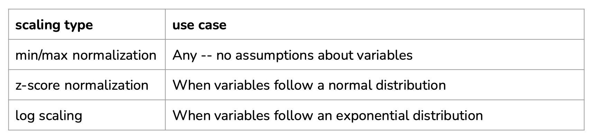
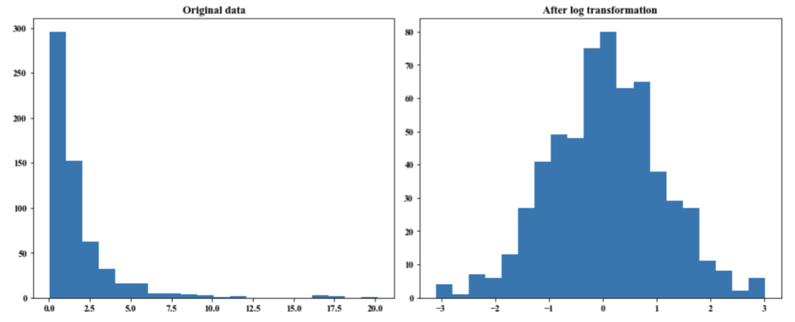

9 best practices for feature engineering
-
Split data by time instead of doing it randomly,
-
If you oversample your data, do it after splitting,
-
Use statistics/info from the train split, instead of the entire data, for feature engineering: scaling, normalizing, handling missing values, creating n-gram count, item encoding, etc,
-
Understand how your data is generated, collected, and processed. Involve domain experts if necessary,
-
Keep track of data lineage,
-
Understand feature importance to your model,
-
Measure correlation between features and labels,
-
Use features that generalize well,
-
Remove stale features from your models.
Feature Engineering steps
-
Handling missing values
-
Scaling
-
Discretization
-
Categorical features
-
Feature crossing
-
Positional embeddings
Handling missing values
Not all missing values are equal:
- Missing not at random (MNAR): when a value is missing due to the value itself,
- Missing at random (MAR): when a value is missing due to another observed variable,
- Missing completely at random (MCAR): there is no pattern to which values are missing.
2 solutions:
- Deletion: removing data with missing entries
- Imputation: filling missing fields with certain values
Deletion
Column deletion: remove columns with too many missing entries.
- Drawbacks: even if half the values are missing, the remaining data still potentially useful information for predictions e.g. even if over half the column for ‘Marital status’ is missing, marital status is still highly correlated with house purchasing
Row deletion:
- Good for: data missing completely at random (MCAR) and few values missing,
- Bad when many examples have missing fields,
- Bad for: missing values are not at random (MNAR) when missing information is information itself,
- Bad for: missing data at random (MAR): Can potentially bias data – we’ve accidentally removed all examples with one feature’s value.
Imputation
Fill missing fields with certain values:
- Defaults: 0, or the empty string, etc.
- Statistical measures: mean, median, mode
Scaling

Computing some statistics (mean, std, min, max) generally requires to know the value for a sampling of the population. It can generate data leakage if, for example the statistics are computed with future values (and if temporality is important).
Log-scaling: help with skewed data and often gives performance gain:

Discretization
- Turning a continuous feature into a discrete feature (quantization),
- Create buckets for different ranges:
- Incorporate knowledge/expertise about each variable by constructing specific buckets.
Categorical features
Different solutions exist:
- One-hot encoding
- Encode unseen brands with “UNKNOWN”
- Group bottom 1% of brands and newcomers into “UNKNOWN” category
- Problem: this treats all newcomers the same as unpopular brands on the platform
- Represent each category with its attribute:
- To represent a brand, use features: yearly revenue, company size, etc..
- Hashing trick
- Hashing – use a hash function to hash categories to different indexes
- Example: hash(“Nike”) = 0, hash(“Adidas”) = 27, etc…
- Benefits: you can choose how large the hash space is, memory efficient, useful for continual learning,
- Drawbacks: two categories being hashed to the same index.
Hashing trick is widely used in industry and in machine learning frameworks and is useful in practice for continual learning in production.
Feature crossing
- Helps models learn non-linear relationships between variables,
- Warning: feature crossing can blow up your feature space.
Positional embeddings
See Positional embeddings in Transformers.
Resources
See: